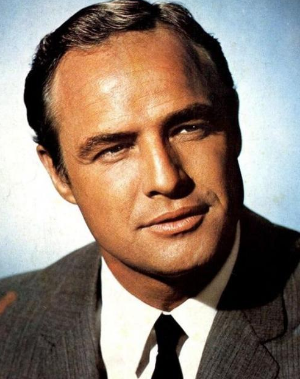

Vous aimerez aussi :
Publié le 22/10/2026
Marlon Brando
(1924 - 2004)

Né Marlon BRANDON Jr., Bud, comme l'appelait sa grand-mère, est né le 3 avril 1924 dans une famille modeste d'Omaha (Nebraska). Sa mère était une actrice dépressive et alcoolique et son père un commerçant "coureur de jupons", selon Marlon Brando.
Maçon, il part à 20 ans, à New-York où il est l'un des premiers comédiens à s'inscrire à la future "prestigieuse" école d'art dramatique l'Actor's Studio qu'Elia Kazan, Robert Lewis et Cheryl Crawford viennent de fonder. Avec Karl Malden, James Dean, Montgomery Clift, Julie Harris, Patricia Neal et d'autres, il est un adepte de la méthode héritée du Russe Stanislasky, qui demande à l'acteur une identification totale avec son personnage.
Mais 1947, c'est aussi l'année d'"Un tramway nommé Désir", la pièce de Tennessee Williams, qui connaît un triomphe et impose tout à la fois Brando et une école, qui fait appel à la spontanéité du comédien et à la richesse de ses ressources émotionnelles. Sa venue allait entraîner une véritable révolution dans le cinéma..
En 1950, il fait son début au grand écran avec "C'étaient des hommes (1950) de Fred Zinnemann, avant de retrouver en 1951 Kazan pour le tournage d'"Un Tramway nommé désir" (1951) qui le révélera au monde entier.
Les sept années qui suivront seront les plus riches dans la carrière de Brando, lui permettant de mettre en pratique les enseignements de l'Actors' Studio et de développer son style propre et sang maniérisme, qui fera école. Il décroche un premier Oscar de meilleur acteur en 1954 pour "Sur les quais (1954) du même Kazan. Mais, de par l'inorthodoxie de son jeu et sa nature d'insoumis, il ne pouvait qu'entrer tôt ou tard en conflit avec l'establishment hollywoodien. Son refus de jouer le jeu et de se prêter aux interviews, de même que son profond dégoût pour les mascarades publicitaires et ce qu'il appelait "le cirque hollywoodien" le mettront progressivement hors la loi. Ses exigences font avorter, en outre, plusieurs projets, dont Senso (1954), où Luchino Visconti l'aurait volontiers opposé à Ingrid Bergman. Cette nature turbulente ne connaîtra pas plus d'apaisement dans sa vie sentimentale. En 1959, après dix-huit mois de mariage, il divorce d'Anna Kashfi, dont il aura un enfant, Christian (1958). Il aura quatre autres enfants : deux de Maria Luisa CASTENADA (1960-1968) et deux de Taritatumi TERRIPIA (Tarita), qu'il rencontrera sur le tournage du film "Les Révoltés du Bounty" (1962).
Après son Oscar pour "Sur les quais" et le succès du film "Le Bal des maudits" (1958), Marlon Brando entre en purgatoire, avec une série de productions médiocres dans les années 1960. De cette période, émergent pourtant sa première et seule réalisation, "One-eyed Jack" (1960), "Reflets dans un oeil d'or" (1967) et "La Poursuite impitoyable" (1966). "Une des meilleures interprétations dont j'ai été le témoin", dira Arthur Penn.
L'éclipse professionnelles se prolonge jusqu'en 1972, année du film "Le Parrain" (1972) grâce au rôle de Don Corleone de Francis Ford Coppola, qui lui donne un deuxième Oscar. Mais il envoie pour le recevoir une supposée Amérindienne - en fait une actrice hispanique - pour protester contre la façon dont Hollywood traite les Indiens. C'est aussi en 1972 qu'il est remarqué pour sa sulfureuse prestation dans "Le Dernier tango à Paris" (1972) de Bernardo Bertolucci, pour lesquels films tout le monde s'accorde à dire que Brando n'a rien perdu de son talent.
En 1990, son fils aîné Christian assassine le fiancé de l'une de ses filles, Cheyenne. Christian Brando fait cinq ans de prison et Cheyenne, en proie à la dépression, se suicide en 1995.
"Superman" (1978) et "La Formule" (1980) pour lesquels il demandera des cachets astronomiques, n'ajouteront rien à sa réputation, le désintérêt pour ce genre de films justifiant, à ses yeux, son appétit financier. On pourra déplorer que le cabotinage et le scandale auront fini par occulter chez Marlon Brando le talent et la sensibilité artistique, même si chaque retour de l'acteur au cinéma suscita, dans la presse, un concert d'applaudissements admiratifs, comme ce fut encore le cas pour l'un de ses derniers films "Premiers pas dans la mafia" (1990).
Mes 3 films préférés
(Pour en savoir plus sur l'un de ces films, cliquez sur son image)
Coup de chapeau
Les commentaires sont soumis à modération et doivent être approuvés avant publication.